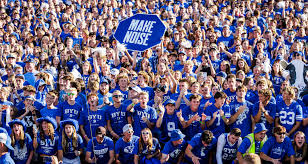

About the ROC
The ROC (short for "roar of the cougars") is the nickname for the student section at BYU. Known for being loud and 100% sober, it is known to cause opposing teams to quake in their boots. At least 5 false starts and 20 missed free throws have been caused by this awesome fanbase.
ROC WebsiteAbout the developer
Jonah Shirts is a sophomore at BYU studying computer science. He loves BYU. Go Cougs! :)
ROC WebsiteIn case of a BYU loss
Read ONLY if BYU loses
It's ok, you can't win 'em all. Maybe this motivational quote will help.
INSERT MOTIVSTIONAL QUOTE HERE